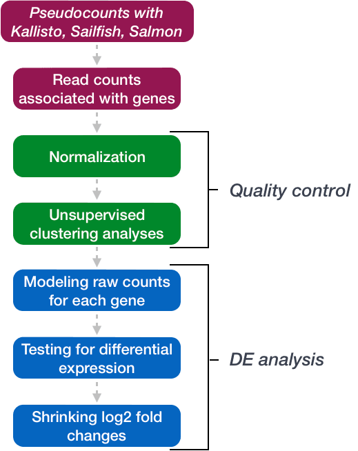
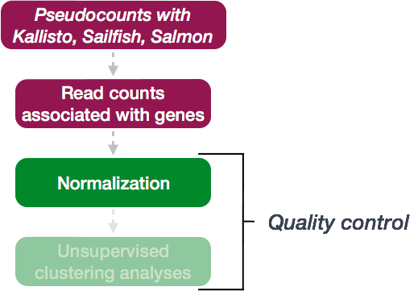
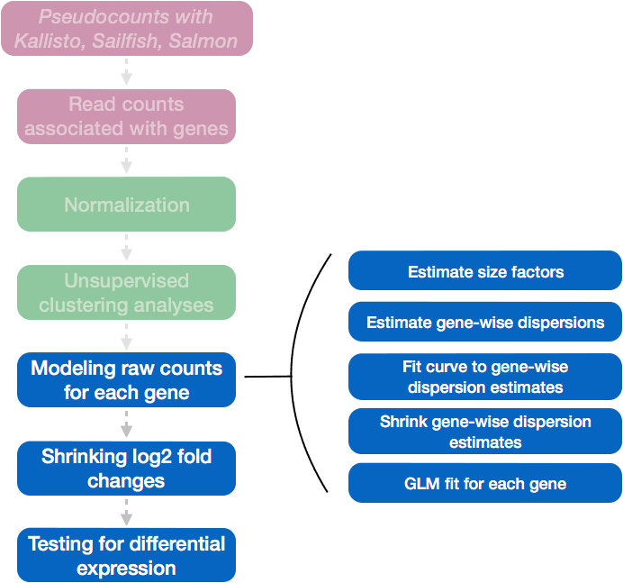
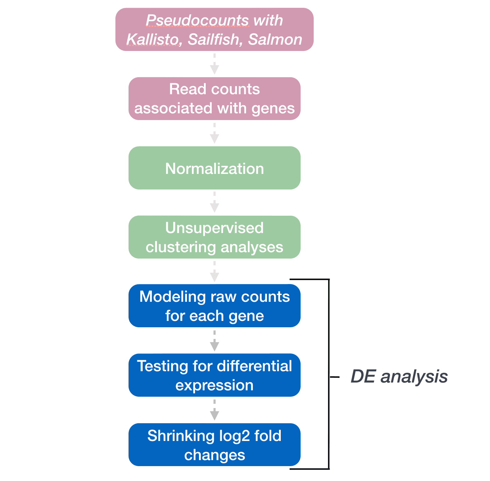
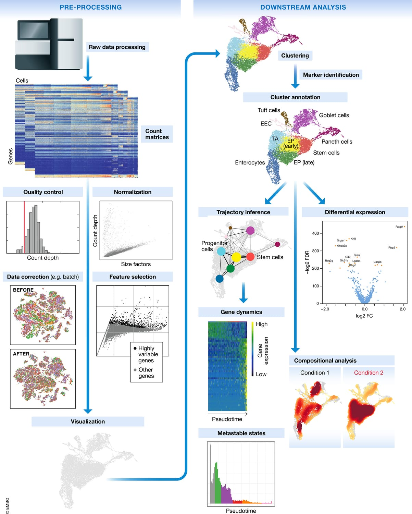
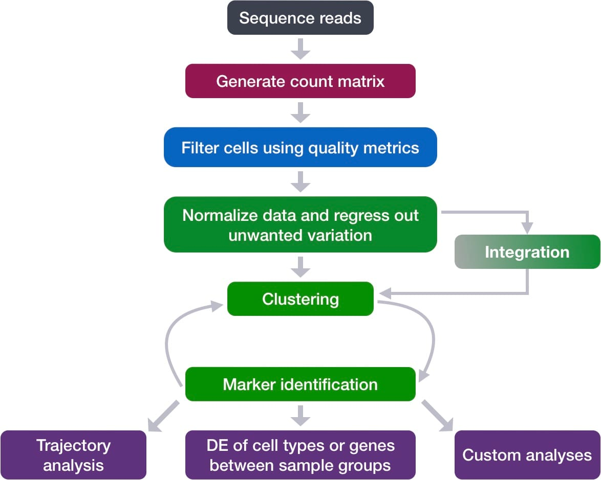

Launch Your
Bioinformatics Career
© 2026 Md. Jubayer Hossain

Md. Jubayer Hossain
Bioinformatician and computational biologist with 5+ years of experience in active research and teaching. Since 2020, he has trained 3,000+ students in practical skills for real-world biological data analysis.
Interests
- Transcriptomics
- Single-Cell Analysis
- Cancer Genomics
- Neurogenomics
- AI in Biomedicine
Education
Jagannath University
BS, MicrobiologyJagannath University
Affiliations
- Founder & CEO, DeepBio Limited
- Founder & Lead Instructor, DeepBio Academy
- Founder & Director, CHIRAL Bangladesh
- Faculty, cBLAST, University of Dhaka
- Visiting Scholar, Daffodil International University
- Program Lead, GSA Bioinformatics Internship
Journey to Bioinformatics
Lost in Microbiology BS. Found direction in Python & R self-study.
Pandemic. Taught R/Python online to juniors. Founded HDRO.
June 10. HDRO evolved into CHIRAL Bangladesh.
Launched DeepBio Limited & Academy.
Research
CHIRAL Bangladesh
Services
DeepBio Limited
Training
DeepBio Academy
NGS data analysis is no longer optional
Whether you're in academia or industry, the ability to analyze your own sequencing data is rapidly becoming a baseline expectation — not a bonus skill.
Perspective adapted from Dr. Lei Guo, Computational Biologist · UT Southwestern Medical Center
Why beginners get stuck
The biology isn't the hard part. Here's what actually blocks researchers before they begin.
Linux & terminal terror
Most tools skip the basics. Beginners get stuck before analysis even starts.
Dependency hell
PATH variables, conflicting versions, and opaque config feel like black magic.
The compute gap
Laptops can't handle production data. HPC and cloud access feels out of reach.
File format maze
FASTQ, BAM, VCF — knowing what to use and how to convert is genuinely confusing.
Tutorial overload
No coherent "start here" path. Scattered resources with no end-to-end pipeline.
Reproducibility crisis
Analyses that only work once. Environment isolation is a critical but untaught skill.
Years of confusion. Distilled into 12 structured weeks.
No map. No mentor.
Every resource assumed different prerequisites. No clear starting point existed — progress meant accidentally stumbling forward and hoping something stuck.
Years lost to trial and error
Skills that take weeks with the right guidance took years without it. Learning alone isn't just frustrating — it's time and momentum you never recover.
Guidance toward independence
Built from 5+ years of research and mentoring 3,000+ students — this program gives you a guide and a structured path so you can think, analyse, and publish on your own.
How this program solves it
Built to address every specific bottleneck beginners face — from environment setup to publication.
Pre-configured Pipelines
Ready-to-run bulk and scRNA-seq pipelines — start with real data from day one.
Linux from Zero
Every command taught live — build real terminal fluency, not memorised commands.
Real Data Formats
FASTQ, BAM, MTX — every format taught live with context for why it exists.
Lean R & Python
Only what bulk and scRNA-seq demands — focused, practical, immediately applicable.
Ready-to-Use Scripts
Every script is yours to keep — a working codebase you apply to your own data.
Lifetime Access + Lab Membership
Recordings for life. Top mentees join my lab as Research Assistants with co-authorship opportunities.
AI-Powered Productivity
Use LLMs responsibly for code generation, debugging, and interpretation — with expert oversight.
Bioinformatics Writing
Guided manuscript writing — from visualisation to interpretation — for real publication.
RNA-seq analysis for absolute beginners
Two specialized tracks — zero to discovery in 12 weeks.
The bioinformatics tech stack
Essential tools for both bulk and single-cell RNA-seq analysis.

Linux & CLI
The backbone of bioinformatics pipelines. Master terminal commands, environment isolation (Conda & pixi), and high-performance computing (HPC).
R Programming
The standard for statistical genomics. Analyze differential expression (Bulk) and high-dimensional cell clustering (Single-cell).
Python
Power for large-scale data wrangling. Essential for pipeline automation and atlas-scale integration (Single-cell).
Bulk RNA-Seq Workflow
From raw sequencing reads to differentially expressed genes with pathway-level context.




Single-Cell Analysis Workflow
From 10X Genomics reads to a resolved cell atlas with annotated clusters and trajectory analysis.


Where you can apply these skills
The Omics stack is the engine behind modern medical breakthroughs.
Precision oncology
Analyze the tumor microenvironment (TME) to identify why certain patients resist immunotherapy and discover novel biomarkers for early cancer detection.
Neurogenomics
Map cell-type specific changes in Alzheimer’s, Parkinson’s, and Autism. Use single-cell data to understand brain aging and neuronal degeneration.
Targeted drug discovery
Screen how thousands of cells respond to candidate drugs. Identify "off-target" effects early in the pipeline to save years of clinical trial failure.
Infectious disease
Decipher the host-pathogen interaction. Analyze immune system exhaustion in chronic infections and optimize vaccine response strategies.
AI will not replace you. It will expose those who rely on it blindly.
AI accelerates science — but only in the hands of someone who knows when the output is wrong.
What AI does genuinely well
- Draft code for variant annotation, DE analysis, QC pipelines
- Surface candidate hypotheses from vast literature at speed
- Automate repetitive formatting, documentation, and scripting
- Predict protein structures (AlphaFold3) and compress raw data to results
What AI cannot do without you
- Judge whether a pipeline suits your experimental design
- Recognise that a plausible-looking result is biologically wrong
- Know which QC thresholds fit your cohort and platform
- Verify that output reflects biology — not a misspecified parameter
"Without expert oversight, AI democratises the appearance of science — not science itself."— Goh et al., npj Digital Medicine, 2026
Your role is shifting, not disappearing
The paper identifies three career-defining moves for bioinformaticians in the AI era.
Goh, Polster, Wong & Cvijovic · npj Digital Medicine 9:398 (2026) · doi:10.1038/s41746-026-02777-1
The test has already begun. Are you the expert behind the AI?
Three foundational habits the paper's authors say separate credible AI-assisted science from noise.
Own the biology, not just the code
An AI can write a DESeq2 script. It cannot decide if the statistical model fits your experimental design, or whether a result near a known locus reflects linkage disequilibrium rather than an independent signal. That judgement is yours alone.
Audit your data before AI touches it
Model architecture is not the bottleneck — data quality is. A model trained on biased or mislabelled data produces confident, wrong outputs indistinguishable from correct ones. Run a structured data audit: batch effects, class imbalance, annotation inconsistency.
Interrogate, don't accept, XAI outputs
Feature importance scores and attention maps are starting points, not conclusions. Test whether the features a model attends to are biologically coherent. Validate on an external cohort. Report uncertainty alongside every prediction. Explanation without expertise is just a story.
Goh, Polster, Wong & Cvijovic · npj Digital Medicine 9:398 (2026)
This is what our mentees produced together.
Multi-Cohort Transcriptomic Meta-Analysis of Glioblastoma Reveals a Convergent Immune-Myeloid Hub Network Associated with Adverse Prognosis and Druggable Targets


Identification of Prognostic Biomarkers in Esophageal Carcinoma through Integrated Bioinformatics Analysis
- Hub genes: CDK1, BUB1, CDC20, CCNB1, FN1
- Histotype-independent drivers across ESCC & EAC
- E2F, G2M & MYC pathway depletion vs. normal mucosa
- RF classifier AUC validated on TCGA ESCA

Bioinformatics Analysis of Transcriptomic Data Reveals Molecular Signatures Driving Colorectal Cancer
- Proliferation Paradox: E2F targets (NES = −2.84), G2M (NES = −2.51) depleted
- 52-gene LASSO-Cox risk model, C-index 0.753
- Random Forest classifier — perfect 10-fold CV AUC = 1.000
- Resolves CRC reproducibility crisis across 2,170 genes

Multi-Omics Meta-Analysis Identifies a Mitotic Signature as a Prognostic and Therapeutic Target in KIRC
- Mitotic signature as convergent prognostic & therapeutic target
- PPI hub gene network via STRINGdb
- GSEA / ORA: Hallmark, KEGG, GO, Reactome
- LASSO-Cox + Random Forest prognostic models

Integrated Transcriptomic Meta-Analysis Identifies Pathway Crosstalk and Therapeutic Targets in Hepatocellular Carcinoma
- 30 study-invariant DEGs — high-specificity conservative signature
- Metabolic reprogramming: fatty acid, bile acid, xenobiotic pathways
- E2F & MYC suppression (NES −2.17, −2.16) — paradoxical pattern
- Drug targets via DGIdb; immune infiltration via ssGSEA

Network-Driven Bioinformatics Approach Uncovers Prognostic Signatures and Therapeutic Targets in Pancreatic Ductal Adenocarcinoma
- Hub genes: FN1, COL1A1, COL1A2, COL3A1, MMP9 — desmoplastic stroma
- EMT (NES = +2.48), IFN-γ (NES = +2.13), allograft rejection enriched
- Top prognosis genes: OASL (HR = 1.346), OAS3, TGFBI
- Signature resilient to stromal contamination (up to 90% stroma)
Is this program for you?
This program is deliberately selective. We accept people, not applications.
You're the right fit if…
- Targeting MS/PhD in international labs (USA, Europe, or similar)
- Ready to commit 10+ hours/week to independent work
- Building a portfolio for a research career in academia or industry
- Serious about becoming a computational researcher, not a hobbyist
- Want to join a serious lab after the 12-week program (RA path)
Not for you if…
- Casual learner or exploring bioinformatics as a hobby
- Expecting guaranteed or rapid publications
- Prefer passive video learning without submitting assignments
- Cannot consistently dedicate 12 full weeks
- Looking for shortcuts, certificates alone, or guaranteed outcomes
Where this leads you
BMP moves you from a learner to a high-impact computational researcher.
Research assistantship
Join the Lab (Cancer / Neuro)
- Direct Work — Join our lab as an RA after successful completion.
- Publication — Opportunity to publish high-impact papers with the mentor.
- Pathway — Gateway for those targeting research excellence abroad.
Academic readiness
Targeting MS / PhD Abroad
- Portfolio — Production-grade GitHub repo of your analysis work.
- Publication — Strategic prep for independent research and authorship.
- Skillset — HPC, Nextflow, Single-cell — prerequisites for top labs.
Industry mastery
Bioinformatician Roles
- Cloud Ops — Deploy pipelines on AWS / Google Cloud via Nextflow.
- Workflow Ops — Containerization (Docker) and CI/CD basics mastery.
- Data Insight — Turn raw FASTQ into actionable biological insights.
Program details
Cohort Structure
- 8 hours/month live sessions (24 total sessions across 12 weeks)
- 10–12 hrs/week independent work required
- Cohort starts 2 weeks after payment window closes
- RA recruitment path available after successful completion
- Long-term collaboration: publications, grants, TA roles
Apply in 5 minutes. Start in weeks.
No payment at application. No obligation until you're accepted and you confirm.
- Apply now — Submit your application at mdjubayerhossain.com/bmp. Takes 5 minutes. Pay first month to confirm your seat.
- Get reviewed — Applications reviewed within 7 days. You'll receive an email with the outcome.
- Fit call — Shortlisted applicants invited to a 30-minute call with the mentor to confirm fit.
- Confirm & start — Payment link sent after fit call. Cohort kicks off 2 weeks after the payment window closes.
Applications open — next cohort starts soon
mdjubayerhossain.com/bmp